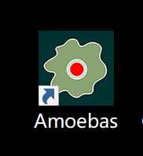

<!DOCTYPE html>
<html>

<head>
    <meta charset="UTF-8">

    <!-- meta viewport tag needed to make site responsive on mobile devices https://developer.mozilla.org/en-US/docs/Web/HTML/Viewport_meta_tag -->
    <meta name="viewport" content="width=device-width, initial-scale=1" />

    <title>Virtual Biome - Amoebas</title>

    <!-- including for some global styling -->
    <link rel="stylesheet" href="../css/style.css">

</head>

<body>
    <!-- if you have sub-pages think about adding a simple back button -->
    <div class="backgroundImage "></div>
    <div class="overlay"></div>
    <nav>
        <a href="../">HOME</a>
    </nav>
    <header class="documentation-header">
        <section class="center-text">
            <h1>Virtual Biome:
                Exploring The Definition of Life, Self-Organization, and Artificial Intervention</h1>
            <h2>by Huichuan Wang</h6>
                <a href="https://huichuan1999.github.io/Amoebas-HTML/" class="Amoebas">
                    <h4 style=color:azure;>Click here to play</h4>
                </a>
        </section>
    </header>

    <main class="documentation-page">
        <section>
            <div class="responsive-video centered-content">
                <!-- <iframe title="vimeo-player" src="https://player.vimeo.com/video/644036051?h=b260a3b1b0" width="100%" height="100%" frameborder="0" allowfullscreen></iframe> -->
                <iframe
                    src="https://player.vimeo.com/video/822976979?h=2678e1a68b&amp;badge=0&amp;autopause=0&amp;player_id=0&amp;app_id=58479"
                    frameborder="0" allow="autoplay; fullscreen; picture-in-picture" allowfullscreen
                    style="position:absolute;top:0;left:0;width:100%;height:100%;" title="Amoebas web game"></iframe>
                <script src="https://player.vimeo.com/api/player.js"></script>
            </div>
        </section>
        <section>
            <h3>Introduction</h3>
            <p>A Samll Web Interation Game, Using JavaScript + HTML + CSS</p>
        </section>
        <section>
            <h3>Concept and Background Research</h3>

            <p>Using Object-Oriented Programming (OOP), p5.js, and HTML languages, I created
                virtual amoebas with individual differences and responses to external stimuli.
                The addition of dynamic Perlin noise, random crawling trajectories and sound
                input imbues these simple shapes with lifelike qualities, stretching the
                definition of "creature" and exploring the boundaries between life and artificial
                constructs. As if experiencing a biological stress response, they tend to
                communicate with each other by changing color and connect by a line when in
                proximity, like exchanging pheromones. If user clicking on the screen, yellow
                dots generate as food, the amoebas would moving towards them, consuming them,
                and get bigger. The interface provides buttons to let human clear food, add
                creatures, kill them, or restart the life game. Codes looming on the screen
                reveal the inner nature of these virtual creatures.
            </p>
            <p>Witnessing these virtual amoebas, which possess primitive structures and simple logic of activity,
                yet can develop intricate and splendid forms and efficiently transmitting "nutrients" or
                "pheromones," challenges human arrogance in assuming superiority and invites us to reconsider
                the definition of life. Drawing inspiration from post-humanist and "decentering humanity"
                approaches, this article seeks to demonstrate the creative endeavor, concomitantly the theoretical
                background and philosophical inspiration behind my project’s materialization. In a more tangible
                sense, these essay will primarily focus on the examination of boundaries between organic and
                inorganic entities, the emergence of self-organization, and the potential implications of human
                involvement in the creation of artificial life forms. Finally, the essay also tries to demonstrate the
                rationale of my practical process.
            </p>

            <!-- if you have a full width image try make it not too tall -->
            

        </section>
        <section>
            <h3>Technical Implementation</h3>

            <!-- example of styling for three images, you can write your own styling -->
            <!-- <div class="flex-container flex-basis-third">
                    <div class="flex-item">
                        
                    </div>
                    <div class="flex-item">
                        
                    </div>
                    <div class="flex-item">
                        
                    </div>
                </div> -->

            <p>I did many things, including but not limited to:<br><br>
                • Added sound input interaction, like a biological stress response is
                triggered, it will respond To the excessive sound, be disturbed, and quickly
                extend the sharp tentacles, like being irritated or hurt.This response also
                occurs when users click on the "kill a creature" button, causing the noise
                radius of the noise circles to increase and the noise wave to fluctuate more
                intensely.<br>
                • Use vector math to improve the movement of creatures when encounter food<br>
                • Manage the creature state of hungry and full. When they are full, they
                shrink back to their original size.<br>
                • Edit style.css and use Flexbox to adjust the layout and style of the page<br>
                • Implemented a layout that can adapt to different screen size, and learned
                to use Media Query, adjust the CSS style according to the device screen size<br>
                • Implemented a GUI interface that can add, delete creatures, restart the
                game, clear the food, etc.<br>
                • Implemented a Service Worker that can cache resources so that the game can
                run offline, in other words, make it a web app.<br>
                • Published the game to the Internet via GitHub Pages<br>
            </p>

            <!-- example of styling for three images, you can write your own styling -->
            <div class="flex-container flex-basis-half">
                <div class="flex-item">
                    
                </div>
                <div class="flex-item">
                    
                </div>
            </div>

            <!-- default flex item is for 4 & follows media query styling for home page -->
            <!-- <div class="flex-container">
                    <div class="flex-item">
                        
                    </div>
                    <div class="flex-item">
                        
                    </div>
                    <div class="flex-item">
                        
                    </div>
                    <div class="flex-item">
                        
                    </div>
                </div> -->

        </section>
        <section>
            <h3>Reflection and Conclution</h3>
            <p>
                Several new thought-provoking questions emerge: Does the
                created amoeba cluster possess any form of subjective consciousness? Are these virtual life forms
                merely “illusions” generated by computer algorithms and random numbers?<br><br>
                From the perspective of "things," these virtual creatures may appear passive, merely accepting their
                programmed interactions and states. However, as these interactions and states grow increasingly
                complex, how do we define the concepts of "life" and "death"? And as we write programs to create
                these virtual entities, does the “mind” live in our own brain follow a similar set of processes?<br><br>
                In conclusion, These questions serve as a reminder that our understanding of life, consciousness,
                and the boundaries between the organic and inorganic world continues to evolve. I will, as always,
                keep an open mind and continue to explore in the field of biology and life.</p>
        </section>
        <section>
            <h3>Future Development</h3>
            About Clear A Food Button: <br><br>
            When the user clicks the "Clear A Food" button, the food doesn't disappear
            immediately. I know it's due to my background transparency, but I want to
            preserve the beautiful trails of the amoebas, so I won't change it. I tried
            many methods, such as letting the food be displayed on another canvas, such as
            assigning an id to each food, and the id is also cleared when I click Clear
            button, but this problem still hasn't been solved. This makes me feel annoying.
            If anyone know how to fix it, please tell me, I would be very grateful.

            <br><br><br>
            More Color Theme (make Change Color button):<br><br>
            I've always wanted to allow users to customize the colors. However, if let
            users slide the slider to change the color, I need at least 3 or 4 sliders for
            one color'RGBA, but I have many different colors in it. Although I wrote how to
            adjust the food color by adjusting 3 sliders, the sliders on the page is not
            good-looking and meaningless, so I give up this solution. Later, I also tried to
            add a plug-in such as picker into my page, but I still haven't figured out how to
            manage these colors.
            Recently, I came up with an idea. As a visual artist, I can call up many sets of
            color theme presets, and then integrate them into a "Change Color" button. When
            the user clicks the button, the next set of color presets is loaded. I really
            like the idea, it doesn't look hard to implement, but I really don't have the
            time. I will continue to refine this idea after the deadline.

        </section>
        <section>
            <h3>References</h3>
            <ul>
                <li>Shiffman, D. (n.d.). p5.js Web Editor. [online] editor.p5js.org. Available at:
                    https://editor.p5js.org/codingtrain/sketches/sy1p1vnQn [Accessed 1 May 2023]</li>
                <li>p5js.org. (n.d.). examples | p5.js. [online] Available at:
                    https://p5js.org/zhHans/examples/simulate-particles.html [Accessed 1 May 2023].</li>
                <li>Shhiffman, D. (2009). The Nature of Code. [online] Natureofcode.com. Available at:
                    https://natureofcode.com/book/chapter-9-the-evolution-of-code/.
                </li>
                <li>Wiener, N. (2013). Cybernetics or control and communication in the animal and the machine.
                    Mansfield Centre, Ct: Martino.</li>
                <li>Bennett, J. (2009). Vibrant Matter A Political Ecology of Things. Duke University Press.
                </li>
                <li>Langton, C.G. and Katsunori Shimohara (1997). Artificial life V : proceedings of the Fifth
                    International Workshop on the Synthesis and Simulation of Living Systems. Cambridge, Mass.: Mit
                    Press.
                </li>
                <li>Slava Gerovitch (2004). From newspeak to cyberspeak : a history of soviet cybernetics. Cambridge,
                    Mass.: Mit Press.
                </li>
            </ul>
        </section>
    </main>

    <footer>
        <!-- normally information like contact details etc  -->
        <!-- read more about semantic HTML https://www.w3schools.com/html/html5_semantic_elements.asp -->

    </footer>
</body>

</html>